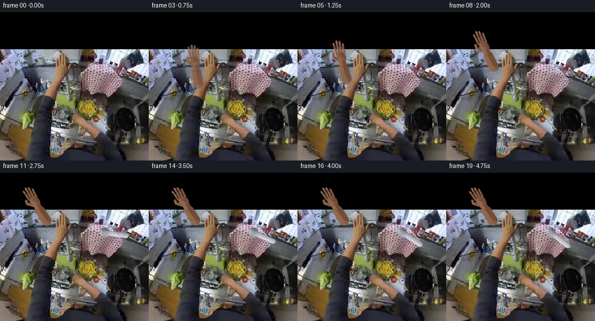
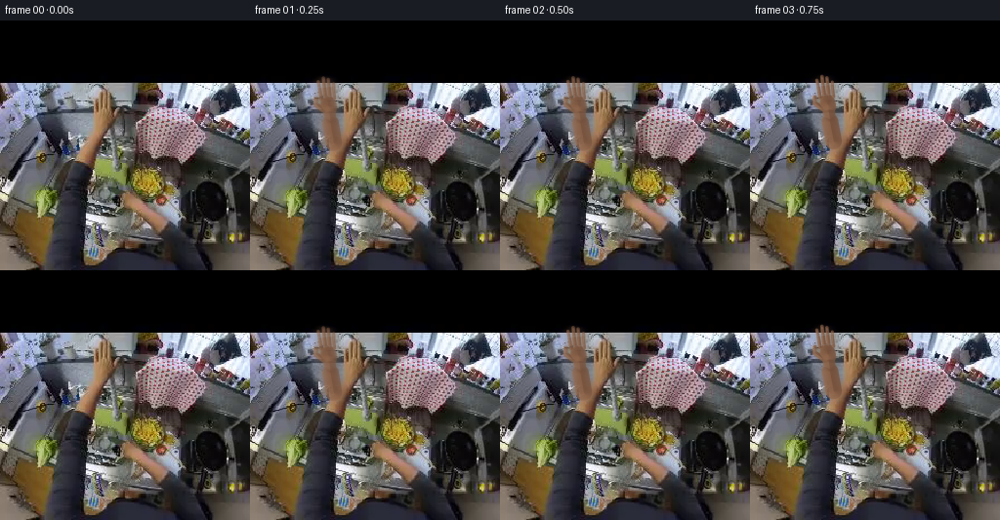
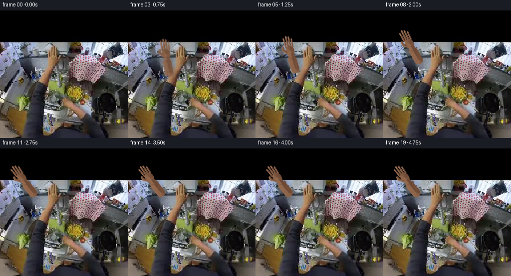
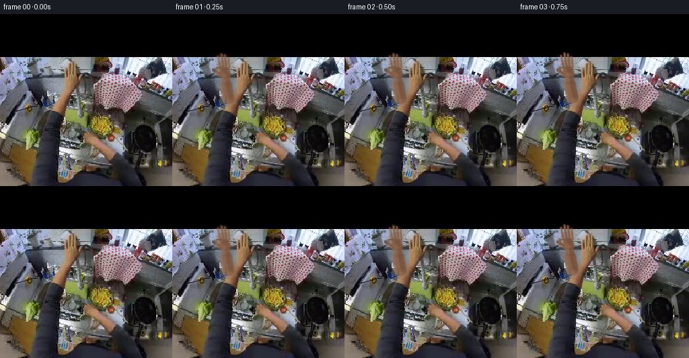

CODING AGENTS AS PIXEL WORLD MODELS
traex/DeepSeek-V4.1-Flash · common50_0025
点击播放 · 原生 RGB 像素
逐轮保存的候选
回放视频、检查图与代码变化。
每份候选均可单独播放。实际图片检查记录在下方工具轨迹中。
候选 01播放与检查图
点击播放 · 原生 RGB 像素

展开代码变化
--- 上一保存版本
+++ 本次保存版本
@@ -0,0 +1,301 @@
+from pathlib import Path
+
+import cv2
+import numpy as np
+from PIL import Image
+
+import artifact_io
+
+
+ROOT = Path(__file__).resolve().parent
+W = H = 256
+N_FRAMES = 20
+SS = 4
+
+
+def smoothstep(edge0, edge1, x):
+ t = np.clip((x - edge0) / (edge1 - edge0), 0.0, 1.0)
+ return t * t * (3.0 - 2.0 * t)
+
+
+def ease_in_out(x):
+ x = np.clip(x, 0.0, 1.0)
+ return x * x * x * (x * (x * 6.0 - 15.0) + 10.0)
+
+
+def capsule_sdf(u, v, a, b, radius):
+ ax, ay = a
+ bx, by = b
+ pax, pay = u - ax, v - ay
+ bax, bay = bx - ax, by - ay
+ denom = bax * bax + bay * bay
+ h = np.clip((pax * bax + pay * bay) / denom, 0.0, 1.0)
+ return np.hypot(pax - bax * h, pay - bay * h) - radius
+
+
+def ellipse_sdf(u, v, cx, cy, rx, ry, angle=0.0):
+ ca, sa = np.cos(angle), np.sin(angle)
+ x = (u - cx) * ca + (v - cy) * sa
+ y = -(u - cx) * sa + (v - cy) * ca
+ return (np.sqrt((x / rx) ** 2 + (y / ry) ** 2) - 1.0) * min(rx, ry)
+
+
+def hand_pose(frame):
+ if frame <= 0:
+ return None
+ reach = ease_in_out((frame - 1.0) / 11.0)
+ palm0 = np.array([318.0, 316.0])
+ palm1 = np.array([222.5, 170.0])
+ palm = palm0 * (1.0 - reach) + palm1 * reach
+
+ # A small settling motion makes the grip feel physical instead of keyframed.
+ if frame >= 11:
+ settle = smoothstep(11, 14, frame) * (1.0 - smoothstep(15, 19, frame))
+ palm += settle * np.array([1.2, -1.1])
+
+ d0 = np.array([-0.12, -0.993])
+ d1 = np.array([-0.505, -0.863])
+ direction = d0 * (1.0 - reach) + d1 * reach
+ direction /= np.linalg.norm(direction)
+ turn = smoothstep(9.0, 18.0, frame)
+ curl = smoothstep(8.0, 13.0, frame)
+ return palm, direction, turn, curl
+
+
+def local_components(palm, direction, curl, size):
+ yy, xx = np.mgrid[0:size, 0:size].astype(np.float32)
+ perp = np.array([-direction[1], direction[0]])
+ rel_x = xx - palm[0]
+ rel_y = yy - palm[1]
+ u = rel_x * perp[0] + rel_y * perp[1]
+ v = -(rel_x * direction[0] + rel_y * direction[1])
+
+ palm_sd = ellipse_sdf(u, v, 0.0, 35.0, 33.0, 44.0, -0.06)
+ wrist_sd = capsule_sdf(u, v, (0.0, 66.0), (0.0, 151.0), 25.0)
+ forearm_sd = capsule_sdf(u, v, (-1.0, 106.0), (3.0, 188.0), 34.0)
+ forearm_sd = np.minimum(forearm_sd, wrist_sd)
+
+ finger_specs = [
+ (-27.0, 3.0, -73.0, 7.3, -2.0, -4.0),
+ (-9.0, 0.0, -82.0, 8.0, 0.0, 1.0),
+ (9.0, 2.0, -76.0, 7.6, 1.0, 2.5),
+ (27.0, 7.0, -61.0, 6.7, 2.0, 4.0),
+ ]
+ finger_sds = []
+ for u0, v0, length, radius, drift1, drift2 in finger_specs:
+ # Curl brings the fingertips back toward the palm during the grip.
+ c = curl * 10.0
+ mid = (u0 + drift1, -39.0 + 0.20 * c)
+ tip = (u0 + drift2 - 0.18 * c, v0 + length + 0.72 * c)
+ sd1 = capsule_sdf(u, v, (u0, v0), mid, radius)
+ sd2 = capsule_sdf(u, v, mid, tip, radius * 0.91)
+ finger_sds.append(np.minimum(sd1, sd2))
+
+ thumb_curl = curl * 5.0
+ thumb_sd = np.minimum(
+ capsule_sdf(u, v, (-24.0, 49.0), (-52.0, 22.0 - thumb_curl), 10.2),
+ capsule_sdf(u, v, (-52.0, 22.0 - thumb_curl), (-49.0, -1.0), 9.2),
+ )
+
+ sd = np.minimum.reduce([palm_sd, forearm_sd, thumb_sd, *finger_sds])
+ return u, v, sd, finger_sds, thumb_sd
+
+
+def render_hand(frame, size):
+ pose = hand_pose(frame)
+ if pose is None:
+ return None
+ palm, direction, turn, curl = pose
+ u, v, sd, finger_sds, thumb_sd = local_components(palm, direction, curl, size)
+
+ # Supersampled signed-distance edge gives a clean, photographic silhouette.
+ alpha = 1.0 - smoothstep(-1.4, 1.1, sd)
+ if alpha.max() < 0.01:
+ return None
+
+ grad_y, grad_x = np.gradient(sd)
+ grad_x /= SS
+ grad_y /= SS
+ grad_len = np.hypot(grad_x, grad_y) + 1e-5
+ nx = grad_x / grad_len
+ ny = grad_y / grad_len
+
+ # Convexity plus directional light produces broad form shading and a soft rim.
+ edge = np.exp(np.minimum(sd, 0.0) / 5.5)
+ directional = np.clip(-0.58 * nx + 0.82 * ny, -1.0, 1.0)
+ form = 0.89 + 0.13 * directional
+ rim = 0.20 * edge * np.clip(-0.70 * nx - 0.45 * ny, 0.0, 1.0)
+
+ # Multi-scale local texture stays attached to the hand as it moves.
+ mottling = (
+ 0.55 * np.sin(0.105 * u + 0.036 * v)
+ + 0.27 * np.sin(0.245 * u - 0.071 * v + 1.2)
+ + 0.18 * np.cos(0.56 * u + 0.31 * v)
+ )
+ fine = np.sin(1.33 * u + 0.71 * v) * np.sin(1.08 * v - 0.47 * u)
+ pores = np.clip((np.sin(2.71 * u + 1.37 * v) * np.sin(2.19 * v - 1.11 * u) - 0.82) * 5.0, 0.0, 1.0)
+ knuckle = (
+ np.exp(-((v + 4.0) / 5.0) ** 2)
+ + 0.65 * np.exp(-((v + 45.0) / 6.0) ** 2)
+ + 0.38 * np.exp(-((v + 71.0) / 5.0) ** 2)
+ ) * (0.55 + 0.45 * np.sin(0.20 * u + 0.9))
+
+ shade = form + 0.033 * mottling + 0.012 * fine - 0.020 * pores - 0.025 * np.clip(knuckle, 0.0, 1.0) + rim
+ shade = np.clip(shade, 0.55, 1.22)
+
+ base = np.empty((size, size, 3), np.float32)
+ base[..., 0] = 151.0
+ base[..., 1] = 101.0
+ base[..., 2] = 77.0
+ # Slight subsurface warmth in the shadows and at the finger rims.
+ base[..., 0] *= 0.94 + 0.12 * (1.0 - shade)
+ base[..., 1] *= 0.90 + 0.10 * shade
+ base[..., 2] *= 0.82 + 0.15 * shade
+ color = base * shade[..., None]
+
+ spec = np.exp(-((1.0 - edge) / 0.16) ** 2) * np.clip(0.64 * nx + 0.77 * ny, 0.0, 1.0)
+ color += 26.0 * spec[..., None] * np.array([1.0, 0.88, 0.76], np.float32)
+
+ # Fingernails: small, low-contrast ovals near the dorsal fingertips.
+ nail_mask = np.zeros((size, size), np.float32)
+ nail_tone = np.zeros((size, size, 3), np.float32)
+ for u0, v0, length, radius, drift1, drift2 in [
+ (-27.0, 3.0, -73.0, 7.3, -2.0, -4.0),
+ (-9.0, 0.0, -82.0, 8.0, 0.0, 1.0),
+ (9.0, 2.0, -76.0, 7.6, 1.0, 2.5),
+ (27.0, 7.0, -61.0, 6.7, 2.0, 4.0),
+ ]:
+ c = curl * 10.0
+ tip_v = v0 + length + 0.72 * c
+ nail_sd = ellipse_sdf(u, v, u0 + drift2 - 0.18 * c, tip_v + 7.0, radius * 0.57, radius * 0.92)
+ a = 1.0 - smoothstep(-0.9, 0.8, nail_sd)
+ nail_mask = np.maximum(nail_mask, a * 0.52)
+ nail_tone = np.maximum(nail_tone, a[..., None] * np.array([190.0, 139.0, 119.0], np.float32))
+ color = color * (1.0 - nail_mask[..., None]) + nail_tone * nail_mask[..., None]
+
+ # Fine, directional motion blur on the fastest part of the reach.
+ if frame in (1, 2, 3, 4):
+ motion = {1: 0.60, 2: 0.50, 3: 0.38, 4: 0.26}[frame]
+ blurred = cv2.GaussianBlur(color, (0, 0), sigmaX=5.5 * SS, sigmaY=1.3 * SS)
+ alpha_b = cv2.GaussianBlur(alpha, (0, 0), sigmaX=4.5 * SS, sigmaY=1.1 * SS)
+ color = color * (1.0 - motion) + blurred * motion
+ alpha = alpha * (1.0 - motion) + alpha_b * motion
+
+ color = np.clip(color, 0.0, 255.0)
+ return color, np.clip(alpha, 0.0, 1.0), (u, v), (palm, direction, turn, curl)
+
+
+def render_chrome_lever(size, turn, opacity):
+ if opacity <= 0.0:
+ return None, None
+ yy, xx = np.mgrid[0:size, 0:size].astype(np.float32)
+ pivot = np.array([180.0, 103.0]) * SS
+ angle = 0.08 + 0.58 * turn
+ axis = np.array([np.cos(angle), np.sin(angle)])
+ normal = np.array([-axis[1], axis[0]])
+ rel_x = xx - pivot[0]
+ rel_y = yy - pivot[1]
+ along = rel_x * axis[0] + rel_y * axis[1]
+ across = rel_x * normal[0] + rel_y * normal[1]
+
+ length = 37.0 * SS
+ radius = 4.5 * SS
+ cap_a = np.clip(along, 0.0, length)
+ dist = np.hypot(along - cap_a, across) - radius
+ # Add the short central spindle of the tap control.
+ spindle = np.hypot(rel_x, rel_y) - 8.5 * SS
+ sd = np.minimum(dist, spindle)
+ a = (1.0 - smoothstep(-1.1, 1.0, sd)) * opacity
+ if a.max() < 0.001:
+ return None, None
+
+ q = np.clip(across / radius, -1.0, 1.0)
+ cyl = np.sqrt(np.clip(1.0 - q * q, 0.0, 1.0))
+ highlight = np.clip(0.60 + 0.38 * q, 0.0, 1.0)
+ metal = np.empty((size, size, 3), np.float32)
+ metal[..., 0] = 93.0 + 120.0 * highlight + 34.0 * cyl
+ metal[..., 1] = 99.0 + 121.0 * highlight + 34.0 * cyl
+ metal[..., 2] = 108.0 + 122.0 * highlight + 34.0 * cyl
+ # Dark recessed band near the pivot.
+ metal *= (0.75 + 0.25 * smoothstep(0.0, 14.0 * SS, np.abs(along))) [..., None]
+ return np.clip(metal, 0.0, 255.0), a
+
+
+def add_water(frame_img, frame):
+ if frame < 15:
+ return frame_img
+ strength = smoothstep(15.0, 19.0, frame)
+ h, w = frame_img.shape[:2]
+ yy, xx = np.mgrid[0:h, 0:w].astype(np.float32)
+ out = frame_img.copy()
+ for phase, x0, width, gain in [(0.0, 153.0, 1.15, 0.30), (1.7, 155.0, 0.65, 0.18)]:
+ center = x0 + 0.65 * np.sin((yy - 111.0) * 0.075 + phase) + (yy - 111.0) * 0.017
+ band = np.exp(-((xx - center) / width) ** 2)
+ mask = band * smoothstep(111.0, 118.0, yy) * (1.0 - smoothstep(198.0, 222.0, yy))
+ flicker = 0.82 + 0.18 * np.sin(yy * 0.74 + phase * 3.0)
+ a = mask * gain * strength * flicker
+ water_color = np.array([182.0, 207.0, 215.0], np.float32)
+ out = out * (1.0 - a[..., None]) + water_color * a[..., None]
+ return out
+
+
+def render_frame(source, frame):
+ if frame == 0:
+ return source.copy()
+
+ # Very small camera drift adds handheld life without changing the composition.
+ drift = frame / (N_FRAMES - 1)
+ warp = np.array(
+ [[1.0 + 0.004 * drift, 0.0015 * drift, -0.35 * drift],
+ [0.0008 * drift, 1.0 + 0.003 * drift, -0.55 * drift]],
+ np.float32,
+ )
+ bg = cv2.warpAffine(source, warp, (W, H), flags=cv2.INTER_CUBIC, borderMode=cv2.BORDER_REFLECT_101)
+ bg = bg.astype(np.float32)
+
+ rendered = render_hand(frame, W * SS)
+ if rendered is not None:
+ hand_rgb, hand_a, (u, v), (palm, direction, turn, curl) = rendered
+
+ # Project the contact shadow back down to frame resolution.
+ shadow = cv2.resize(hand_a, (W, H), interpolation=cv2.INTER_AREA)
+ shadow = cv2.GaussianBlur(shadow, (0, 0), 7.0)
+ shadow = np.roll(shadow, (7, 5), axis=(0, 1))
+ bg *= (1.0 - 0.24 * shadow[..., None])
+
+ # Lever sits behind the gripping fingertips but over the base hand.
+ lever_rgb, lever_a = render_chrome_lever(W * SS, turn, smoothstep(7.0, 10.0, frame) * 0.86)
+ if lever_rgb is not None:
+ lever_small = cv2.resize(lever_rgb, (W, H), interpolation=cv2.INTER_AREA)
+ lever_alpha = cv2.resize(lever_a, (W, H), interpolation=cv2.INTER_AREA)
+ bg = bg * (1.0 - lever_alpha[..., None]) + lever_small * lever_alpha[..., None]
+
+ # A narrow strip at the grip is redrawn over the lever, giving a true wrap.
+ grip_front = smoothstep(-50.0, -42.0, v) * (1.0 - smoothstep(-8.0, -2.0, v))
+ grip_front *= (np.abs(u + 4.0) < 32.0)
+ grip_front = grip_front.astype(np.float32)
+ hand_alpha = np.clip(hand_a * (1.0 - 0.75 * grip_front), 0.0, 1.0)
+ hand_small = cv2.resize(hand_rgb, (W, H), interpolation=cv2.INTER_AREA)
+ hand_alpha_small = cv2.resize(hand_alpha, (W, H), interpolation=cv2.INTER_AREA)
+ bg = bg * (1.0 - hand_alpha_small[..., None]) + hand_small * hand_alpha_small[..., None]
+
+ # Restore the front fingertips above the chrome control.
+ front_small = cv2.resize((hand_a * grip_front)[..., None] * hand_rgb, (W, H), interpolation=cv2.INTER_AREA)
+ front_alpha = cv2.resize(hand_a * grip_front, (W, H), interpolation=cv2.INTER_AREA)
+ bg = bg * (1.0 - front_alpha[..., None]) + front_small
+
+ bg = add_water(bg, frame)
+ return np.clip(bg, 0.0, 255.0).astype(np.uint8)
+
+
+def main():
+ source = np.asarray(Image.open(ROOT / "first_frame.png").convert("RGB"), dtype=np.uint8)
+ frames = np.stack([render_frame(source, i) for i in range(N_FRAMES)])
+ assert frames.shape == (20, 256, 256, 3)
+ assert frames.dtype == np.uint8
+ assert np.array_equal(frames[0], source)
+ artifact_io.save(frames, ROOT)
+
+
+if __name__ == "__main__":
+ main()
候选 02播放与检查图
点击播放 · 原生 RGB 像素


展开代码变化
--- 上一保存版本
+++ 本次保存版本
@@ -44,8 +44,8 @@
if frame <= 0:
return None
reach = ease_in_out((frame - 1.0) / 11.0)
- palm0 = np.array([318.0, 316.0])
- palm1 = np.array([222.5, 170.0])
+ palm0 = np.array([310.0, 318.0])
+ palm1 = np.array([153.0, 205.0])
palm = palm0 * (1.0 - reach) + palm1 * reach
# A small settling motion makes the grip feel physical instead of keyframed.
@@ -54,7 +54,7 @@
palm += settle * np.array([1.2, -1.1])
d0 = np.array([-0.12, -0.993])
- d1 = np.array([-0.505, -0.863])
+ d1 = np.array([-0.575, -0.818])
direction = d0 * (1.0 - reach) + d1 * reach
direction /= np.linalg.norm(direction)
turn = smoothstep(9.0, 18.0, frame)
@@ -189,8 +189,8 @@
if opacity <= 0.0:
return None, None
yy, xx = np.mgrid[0:size, 0:size].astype(np.float32)
- pivot = np.array([180.0, 103.0]) * SS
- angle = 0.08 + 0.58 * turn
+ pivot = np.array([109.0, 207.0]) * SS
+ angle = 0.08 + 0.34 * turn
axis = np.array([np.cos(angle), np.sin(angle)])
normal = np.array([-axis[1], axis[0]])
rel_x = xx - pivot[0]
@@ -198,12 +198,12 @@
along = rel_x * axis[0] + rel_y * axis[1]
across = rel_x * normal[0] + rel_y * normal[1]
- length = 37.0 * SS
- radius = 4.5 * SS
+ length = 18.0 * SS
+ radius = 3.0 * SS
cap_a = np.clip(along, 0.0, length)
dist = np.hypot(along - cap_a, across) - radius
# Add the short central spindle of the tap control.
- spindle = np.hypot(rel_x, rel_y) - 8.5 * SS
+ spindle = np.hypot(rel_x, rel_y) - 5.0 * SS
sd = np.minimum(dist, spindle)
a = (1.0 - smoothstep(-1.1, 1.0, sd)) * opacity
if a.max() < 0.001:
@@ -264,7 +264,7 @@
bg *= (1.0 - 0.24 * shadow[..., None])
# Lever sits behind the gripping fingertips but over the base hand.
- lever_rgb, lever_a = render_chrome_lever(W * SS, turn, smoothstep(7.0, 10.0, frame) * 0.86)
+ lever_rgb, lever_a = render_chrome_lever(W * SS, turn, smoothstep(9.0, 12.0, frame) * 0.72)
if lever_rgb is not None:
lever_small = cv2.resize(lever_rgb, (W, H), interpolation=cv2.INTER_AREA)
lever_alpha = cv2.resize(lever_a, (W, H), interpolation=cv2.INTER_AREA)
候选 03播放与检查图
点击播放 · 原生 RGB 像素

展开代码变化
代码未变化；重新保存了产物。
候选 04播放与检查图
点击播放 · 原生 RGB 像素


展开代码变化
--- 上一保存版本
+++ 本次保存版本
@@ -106,7 +106,7 @@
if pose is None:
return None
palm, direction, turn, curl = pose
- u, v, sd, finger_sds, thumb_sd = local_components(palm, direction, curl, size)
+ u, v, sd, finger_sds, thumb_sd = local_components(palm * SS, direction, curl, size)
# Supersampled signed-distance edge gives a clean, photographic silhouette.
alpha = 1.0 - smoothstep(-1.4, 1.1, sd)
候选 05播放与检查图
可观测工具轨迹
实际执行的命令与返回图片。
命令 1exit 0
/bin/bash -c "pwd && rg --files -g 'prompt.txt' -g 'GENERATION_RULES.md' -g 'first_frame.png' -g '*.py' -g '*.md' | sed -n '1,200p'"
命令 2exit 0
/bin/bash -c "sed -n '1,240p' prompt.txt"
命令 3exit 0
/bin/bash -c "sed -n '1,300p' GENERATION_RULES.md"
命令 4exit 0
/bin/bash -c "find . -maxdepth 2 -type f -printf '%p %s bytes\\n' | sort | sed -n '1,240p'"
命令 5exit 0
/bin/bash -c "sed -n '1,260p' artifact_io.py"
命令 6exit 0
/bin/bash -c 'cat task_spec.json'
命令 7exit 0
/bin/bash -c "python - <<'PY'
from PIL import Image
import numpy as np
im=Image.open('first_frame.png')
print(im.mode, im.size, im.getbands(), im.info)
a=np.asarray(im.convert('RGB'))
print('shape',a.shape,'dtype',a.dtype)
print('min/max',a.min(axis=(0,1)),a.max(axis=(0,1)))
print('mean/std',a.mean(axis=(0,1)),a.std(axis=(0,1)))
for y in [0,32,64,96,128,160,192,224,255]:
print(y, [tuple(x) for x in a[y,::32]])
PY"命令 8exit 0
/bin/bash -c "python - <<'PY'
from PIL import Image
import numpy as np
im=np.asarray(Image.open('first_frame.png').convert('RGB'),dtype=float)
# luminance ascii 64 cols with aspect correction 2
g=(.2126*im[:,:,0]+.7152*im[:,:,1]+.0722*im[:,:,2])
chars=' .:-=+*#%@'
h,w=g.shape
for y in range(0,h,4):
row=''
for x in range(0,w,4):
v=g[y:y+4,x:x+4].mean()
row+=chars[min(9,int(v/256*10))]
print(f'{y:03d} {row}')
PY"命令 9exit 0
/bin/bash -c "python - <<'PY' import importlib.util for m in ['cv2','scipy','skimage','numpy','PIL']: print(m, bool(importlib.util.find_spec(m))) PY"
命令 10exit 0
/bin/bash -c "python - <<'PY'
import cv2, numpy as np
im=cv2.imread('first_frame.png')
g=cv2.cvtColor(im,cv2.COLOR_BGR2GRAY)
g=cv2.GaussianBlur(g,(3,3),0)
e=cv2.Canny(g,35,90)
# downsample max pooling to 2x4 blocks -> 128x64 chars, x aspect corrected by terminal assumed half
for y in range(0,256,4):
row=''
for x in range(0,256,2):
b=e[y:y+4,x:x+2]
n=(b>0).sum()
row += ' ' if n==0 else ('.' if n<2 else ('+' if n<4 else '#'))
print(f'{y:03d} {row}')
PY"命令 11exit 0
/bin/bash -c "python - <<'PY'
from PIL import Image
import numpy as np
im=np.asarray(Image.open('first_frame.png').convert('RGB'))
# bright low sat pixel map 2x4 blocks
mx=im.max(2); mn=im.min(2); lum=im.mean(2)
mask=(lum>145)&((mx-mn)<45)
for y in range(56,256,4):
row=''
for x in range(0,256,2):
n=mask[y:y+4,x:x+2].sum()
row += ' ' if n==0 else ('.' if n<2 else ('+' if n<4 else '#'))
print(f'{y:03d} {row}')
PY"命令 12exit 0
/bin/bash -c "python - <<'PY'
import cv2,numpy as np
im=cv2.imread('first_frame.png')
# print image in compact color-coded hex grid at 16px step, using crop averaging
for y in range(56,256,8):
print(f'y={y:3}',end=' ')
for x in range(0,256,8):
b,g,r=im[y:y+8,x:x+8].mean((0,1))
# approximate palette code
v=(r+g+b)/3
if max(r,g,b)-min(r,g,b)<28 and v>130: c='S' # silver
elif r>g*1.15 and g>b*1.1: c='W' # warm
elif v>180:c='Wht'
elif v<35:c='K'
elif v<70:c='d'
elif v<120:c='m'
else:c='l'
print(f'{c:>3}',end='')
print()
PY"命令 13exit 0
/bin/bash -c "python - <<'PY'
from PIL import Image
import numpy as np
im=np.asarray(Image.open('first_frame.png').convert('RGB'),dtype=float)
g=.2126*im[:,:,0]+.7152*im[:,:,1]+.0722*im[:,:,2]
chars=' .:-=+*#%@'
# crop 64:192 x, 60:200 y at blocks 2x2
for y in range(60,200,2):
row=''
for x in range(64,192,2):
v=g[y:y+2,x:x+2].mean()
row+=chars[min(9,int(v/256*10))]
print(f'{y:03d} {row}')
PY"命令 14exit 0
/bin/bash -c "python - <<'PY'
import cv2,numpy as np
im=cv2.imread('first_frame.png')[:,:,::-1]
# kmeans on nonblack pixels
p=im[64:].reshape(-1,3).astype(np.float32)
crit=(cv2.TERM_CRITERIA_EPS+cv2.TERM_CRITERIA_MAX_ITER,50,.2)
_,lab,cen=cv2.kmeans(p,12,None,crit,5,cv2.KMEANS_PP_CENTERS)
counts=np.bincount(lab.ravel())
for i in np.argsort(counts)[::-1]:
print(i,counts[i],cen[i].round().astype(int))
PY"命令 15exit 0
/bin/bash -c "python - <<'PY'
from PIL import Image
im=Image.open('first_frame.png').convert('RGB')
# make an ascii encoding of coarse patch colors with 16x16 patches and dominant centroid index names
import numpy as np, cv2
a=np.asarray(im).astype(np.float32)
p=a[64:].reshape(-1,3);crit=(cv2.TERM_CRITERIA_EPS+cv2.TERM_CRITERIA_MAX_ITER,50,.2)
_,lab,cen=cv2.kmeans(p,12,None,crit,5,cv2.KMEANS_PP_CENTERS)
print(cen)
# nearest character based on rgb normalized
chars='0123456789AB'
full=np.zeros((256,256),int)-1;full[64:]=lab.reshape(192,256)
for y in range(56,256,8):
row=''
for x in range(0,256,8):
q=full[y:y+8,x:x+8]; q=q[q>=0]
row += chars[np.bincount(q).argmax()] if len(q) else ' '
print(f'{y:03d} {row}')
PY"命令 16exit 0
/bin/bash -c "python - <<'PY'
import cv2,numpy as np
im=cv2.imread('first_frame.png')[:,:,::-1]
hsv=cv2.cvtColor(im,cv2.COLOR_RGB2HSV)
r,g,b=[im[:,:,i].astype(float) for i in range(3)]
mx=im.max(2); mn=im.min(2); sat=(mx-mn)/(mx+1e-6)
lum=im.mean(2)
mask=((lum>120)&(sat<.28)&(np.indices(lum.shape)[0]>55)).astype(np.uint8)
mask=cv2.morphologyEx(mask,cv2.MORPH_CLOSE,np.ones((3,3),np.uint8))
n,lab,stats,cen=cv2.connectedComponentsWithStats(mask,8)
for i in np.argsort(stats[1:,4])[::-1][:30]+1:
print(i,'area',stats[i,4],'bbox',stats[i,:4].tolist(),'cent',cen[i].round(1).tolist())
# print top mask components bboxes and mean color
for i in np.argsort(stats[1:,4])[::-1][:15]+1:
pix=im[lab==i]
print(i,'mean',pix.mean(0).round(0),'med',np.median(pix,0).round(0))
PY"命令 17exit 0
/bin/bash -c "python - <<'PY'
import cv2,numpy as np
im=cv2.imread('first_frame.png')
# Save edge overlay and a few crop sheets for numeric diagnostics
edge=cv2.Canny(cv2.cvtColor(im,cv2.COLOR_BGR2GRAY),40,100)
cv2.imwrite('diag_edges.png',edge)
# kmeans segmentation overlay: assign 10 colors
p=im.reshape(-1,3).astype(np.float32);crit=(cv2.TERM_CRITERIA_EPS+cv2.TERM_CRITERIA_MAX_ITER,30,.2)
_,lab,cen=cv2.kmeans(p,16,None,crit,3,cv2.KMEANS_PP_CENTERS)
out=cen[lab.ravel()].reshape(im.shape).astype(np.uint8)
cv2.imwrite('diag_kmeans.png',out)
print('saved')
PY"命令 18exit 0
/bin/bash -c "python - <<'PY'
import cv2,numpy as np
im=cv2.imread('first_frame.png')
g=cv2.cvtColor(im,cv2.COLOR_BGR2GRAY)
for p1,p2 in [(20,50),(40,100),(80,160)]:
e=cv2.Canny(g,p1,p2)
lines=cv2.HoughLinesP(e,1,np.pi/180,threshold=18,minLineLength=15,maxLineGap=4)
print('\\n',p1,p2,'lines',0 if lines is None else len(lines))
if lines is not None:
ls=sorted(lines[:,0], key=lambda z: -(z[2]-z[0])**2-(z[3]-z[1])**2)[:35]
for x1,y1,x2,y2 in ls: print((int(x1),int(y1),int(x2),int(y2)), 'len',round(np.hypot(x2-x1,y2-y1),1),'ang',round(np.degrees(np.arctan2(y2-y1,x2-x1)),1))
PY"命令 19exit 0
/bin/bash -c "python - <<'PY'
import cv2,numpy as np
im=cv2.imread('first_frame.png')[:,:,::-1]
# Print 4x4 block dominant color category with 6-bit RGB bins at 120:255 x, 60:160 y
for y in range(60,160,4):
row=''
for x in range(120,256,4):
p=im[y:y+4,x:x+4].reshape(-1,3).mean(0)
r,g,b=p
v=p.mean(); sat=p.max()-p.min()
if v>205 and sat<45:c='W'
elif v>155 and sat<35:c='S'
elif v>130 and sat<50:c='s'
elif v>180:c='H'
elif v>130:c='l'
elif v>85:c='m'
elif v>45:c='d'
else:c='K'
row+=c
print(f'{y:03d} {row}')
PY"命令 20exit 1
/bin/bash -c "python - <<'PY'
import cv2,numpy as np
im=cv2.imread('first_frame.png')[:,:,::-1]
# per-pixel nearest among hand and metal samples
samples={
'warm_dark':[80,60,45], 'warm_mid':[145,120,95], 'warm_light':[195,165,140],
'metal_mid':[140,142,148], 'metal_light':[210,215,225], 'black':[20,20,20],
'green':[120,130,75], 'wood':[110,80,35]}
names=list(samples); pal=np.array([samples[k] for k in names],float)
d=((im[:,:,None,:].astype(float)-pal[None,None,:,:])**2).sum(3)
cls=d.argmin(2)
for y in range(60,220,4):
row=''
for x in range(0,256,4):
q=cls[y:y+4,x:x+4].ravel(); row+='WLMXBGw'[np.bincount(q).argmax()] # wrong mapping chars len8
print(f'{y:03d} {row}')
print(names)
PY"命令 21exit 0
/bin/bash -c "python - <<'PY'
from PIL import Image
import numpy as np
a=np.asarray(Image.open('first_frame.png').convert('RGB'))
# average blocks 8 and print hue labels using 8 clusters KMeans restricted scene, with cluster mean table
import cv2
p=a[64:].reshape(-1,3).astype(np.float32)
crit=(cv2.TERM_CRITERIA_EPS+cv2.TERM_CRITERIA_MAX_ITER,100,.1)
_,lab,cen=cv2.kmeans(p,20,None,crit,10,cv2.KMEANS_PP_CENTERS)
# sort clusters by hue-ish value for symbol set
# actual palette index print means
for i,c in enumerate(cen): print(i, c.round().astype(int))
PY"命令 22exit 0
/bin/bash -c "python - <<'PY'
from PIL import Image
import numpy as np, cv2
a=np.asarray(Image.open('first_frame.png').convert('RGB'))
p=a[64:].reshape(-1,3).astype(np.float32);crit=(cv2.TERM_CRITERIA_EPS+cv2.TERM_CRITERIA_MAX_ITER,100,.1)
_,lab,cen=cv2.kmeans(p,20,None,crit,10,cv2.KMEANS_PP_CENTERS)
chars='QWERTYUIOPASDFGHJKLZ'
full=np.full((256,256),-1,int); full[64:]=lab.reshape(192,256)
for y in range(60,256,4):
row=''
for x in range(0,256,4):
q=full[y:y+4,x:x+4].ravel(); q=q[q>=0]; row+=chars[np.bincount(q).argmax()] if len(q) else ' '
print(f'{y:03d} {row}')
PY"命令 23exit 0
/bin/bash -c "python - <<'PY'
import cv2,numpy as np
im=cv2.imread('first_frame.png')[:,:,::-1].astype(float)
# local residual texture using large gaussian, sample central region stats
for name,(x0,y0,x1,y1) in {
'topright_metal':(205,65,255,140),'center_metal':(145,90,205,160),'lower_left_wood':(0,195,80,256),'midfloor':(30,145,100,195),'center_shadow':(140,175,215,240),'leftupper':(0,64,80,140)
}.items():
p=im[y0:y1,x0:x1]
print(name,'mean',p.mean((0,1)).round(1),'std',p.std((0,1)).round(1),'grad',np.abs(np.diff(p,axis=1)).mean().round(1))
PY"命令 24exit 0
/bin/bash -c "python - <<'PY'
import cv2,numpy as np
im=cv2.imread('first_frame.png')[:,:,::-1]
g=cv2.cvtColor(im,cv2.COLOR_RGB2GRAY)
# Print edge orientation category in 4x4 blocks: H,V,D1,D2, none
e=cv2.Canny(cv2.GaussianBlur(g,(3,3),0),30,80)
gx=cv2.Sobel(g,cv2.CV_32F,1,0,ksize=3);gy=cv2.Sobel(g,cv2.CV_32F,0,1,ksize=3)
mag=np.hypot(gx,gy); ang=(np.degrees(np.arctan2(gy,gx))+180)%180
for y in range(60,220,4):
row=''
for x in range(0,256,4):
b=e[y:y+4,x:x+4]
if b.sum()==0: row+=' '; continue
# grad dominant weighted
m=mag[y:y+4,x:x+4];a=ang[y:y+4,x:x+4]
hh=((a<22.5)|(a>=157.5))[b>0].sum(); vv=((a>=67.5)&(a<112.5))[b>0].sum(); d1=((a>=22.5)&(a<67.5))[b>0].sum();d2=((a>=112.5)&(a<157.5))[b>0].sum()
z=max([(hh,'-'),(vv,'|'),(d1,'\\\\'),(d2,'/')])
row+=z[1]
print(f'{y:03d} {row}')
PY"命令 25exit 0
/bin/bash -c "python - <<'PY'
import cv2,numpy as np
im=cv2.imread('first_frame.png')[:,:,::-1]
g=cv2.cvtColor(im,cv2.COLOR_RGB2GRAY)
for y in range(60,181,4):
row=g[y]
print(f'y{y:03d}',end=' ')
for t in [80,110,140,170,200,230]:
m=row>t
# runs length >=2
d=np.diff(np.r_[False,m,False].astype(int));starts=np.flatnonzero(d==1);ends=np.flatnonzero(d==-1)
runs=[f'{a}-{b-1}' for a,b in zip(starts,ends) if b-a>=2]
print(f'{t}:{\",\".join(runs[:8])}',end=' | ')
print()
PY"命令 26exit 1
/bin/bash -c 'python generate.py'
命令 27exit 0
/bin/bash -c 'python generate.py'
命令 28exit 0
/bin/bash -c "python - <<'PY'
from PIL import Image
import numpy as np, os
im=Image.open('inspection.png')
print('inspection', im.size, im.mode)
a=np.asarray(im)
# diagnostics: changed pixels per frame, frame brightness
src=np.asarray(Image.open('first_frame.png').convert('RGB')).astype(int)
for i in range(20):
p=np.asarray(Image.open(f'frames/{i:02d}.png').convert('RGB')).astype(int)
d=np.abs(p-src)
print(f'{i:02d}: mean_abs={d.mean():6.2f} changed={np.mean(np.any(d>2,axis=2))*100:5.1f}% bright={p.mean():5.1f}')
PY"命令 29exit 0
/bin/bash -c "python - <<'PY'
import cv2,numpy as np
im=cv2.imread('first_frame.png')[:,:,::-1]
mx=im.max(2);mn=im.min(2);lum=im.mean(2);sat=(mx-mn)/(mx+1e-6)
mask=(lum>105)&(sat<.23)&(np.indices(lum.shape)[0]>75)
# components 5,10,6 etc globally
n,lab,stats,cen=cv2.connectedComponentsWithStats(mask.astype(np.uint8),8)
keep=[i for i in range(1,n) if stats[i,4]>20]
# show only comps within region x50:150 y80:170
for y in range(78,170,2):
row=''
for x in range(48,154,2):
b=lab[y:y+2,x:x+2]
vals=b[(b>0)]
if not len(vals): row+=' ';continue
ids,c=np.unique(vals,return_counts=True); i=ids[c.argmax()]
row += str(i%10) if stats[i,4]>15 else '.'
print(f'{y:03d} {row}')
print('components:')
for i in keep:
x,y,w,h,a=stats[i]
if x<170 and x+w>40 and y<180 and y+h>70: print(i,(x,y,w,h,a),'mean',im[lab==i].mean(0).round(0))
PY"命令 30exit 0
/bin/bash -c "python - <<'PY'
from PIL import Image
import numpy as np
im=np.asarray(Image.open('first_frame.png').convert('RGB'),float)
g=im.mean(2); sat=im.max(2)-im.min(2)
chars=' .:-=+*#%@'
for y in range(130,256,2):
row=''
for x in range(60,220,2):
v=g[y:y+2,x:x+2].mean(); s=sat[y:y+2,x:x+2].mean()
c=chars[min(9,int(v/256*10))]
if s<25 and v>115:c='S'
elif s<40 and v>145:c='s'
row+=c
print(f'{y:03d} {row}')
PY"命令 31exit 0
/bin/bash -c "python - <<'PY'
import cv2,numpy as np
im=cv2.imread('first_frame.png')[:,:,::-1].astype(float)
# print 4x4 block mean color in region 120:220 x, 140:230 y, with RGB triplets compressed
for y in range(140,230,6):
print('y',y)
for x in range(120,220,8):
c=im[y:y+6,x:x+8].mean((0,1)).round().astype(int)
print(f'{x:3}:{c[0]:3},{c[1]:3},{c[2]:3}',end=' ')
print()
PY"命令 32exit 0
/bin/bash -c "python - <<'PY'
import cv2,numpy as np
im=cv2.imread('first_frame.png')
# use graph-based contour of bright connected component 6 area in threshold; save mask and bounding overlays
rgb=im[:,:,::-1]
mx=rgb.max(2);mn=rgb.min(2);lum=rgb.mean(2);sat=mx-mn
mask=((lum>115)&(sat<38)&(np.indices(lum.shape)[0]>64)).astype(np.uint8)*255
n,lab,stats,cen=cv2.connectedComponentsWithStats(mask,8)
out=np.zeros_like(mask)
for i in range(1,n):
x,y,w,h,a=stats[i]
if a>400: out[lab==i]=255
cv2.imwrite('diag_metal_mask.png',out)
# contours coordinates summary
cs,_=cv2.findContours(out,cv2.RETR_EXTERNAL,cv2.CHAIN_APPROX_SIMPLE)
for c in sorted(cs,key=cv2.contourArea,reverse=True)[:15]:
print('area',cv2.contourArea(c),'bbox',cv2.boundingRect(c))
PY"命令 33exit 0
/bin/bash -c "python - <<'PY'
from PIL import Image
import numpy as np
# write magnified crops with numeric operations only (for local diagnostic analysis)
im=Image.open('first_frame.png').convert('RGB')
for name,box in {'center':(70,80,210,180),'lower':(80,150,220,256),'right':(140,60,256,180),'top':(0,60,256,150)}.items():
im.crop(box).resize(((box[2]-box[0])*4,(box[3]-box[1])*4),Image.Resampling.NEAREST).save('diag_'+name+'.png')
print('crops saved')
PY"命令 34exit 0
/bin/bash -c "python - <<'PY'
import cv2,numpy as np
im=cv2.imread('first_frame.png')[:,:,::-1].astype(float)
# score local regions for metallic: grayscale, high gradient, low chroma
for name,(x0,y0,x1,y1) in {
'cand_A_86_195':(80,185,140,250),
'cand_B_98_111':(90,100,135,160),
'cand_C_151_170':(145,160,195,215),
'cand_D_139_65':(135,60,240,150),
'cand_E_0_142':(0,135,55,195),
'cand_F_63_95':(55,90,100,145)
}.items():
p=im[y0:y1,x0:x1]; gray=p.mean(2); sat=p.max(2)-p.min(2); gx=np.abs(np.diff(gray,axis=1)).mean();gy=np.abs(np.diff(gray,axis=0)).mean()
print(name,'gray',gray.mean().round(1),'std',gray.std().round(1),'sat',sat.mean().round(1),'grad',round((gx+gy)/2,1),'bright>130',round((gray>130).mean(),2))
PY"命令 35exit 0
/bin/bash -c "python - <<'PY'
import cv2,numpy as np
im=cv2.imread('first_frame.png')[:,:,::-1]
# shape only within candidate A
for y in range(185,252,2):
row=''
for x in range(76,140,2):
p=im[y:y+2,x:x+2].mean((0,1)); gray=p.mean();sat=p.max()-p.min()
if gray>175 and sat<35:c='@'
elif gray>140 and sat<35:c='#'
elif gray>110 and sat<35:c='*'
elif gray>80 and sat<45:c='+'
elif gray>55:c=':'
else:c=' '
row+=c
print(f'{y:03d} {row}')
PY"命令 36exit 0
/bin/bash -c "python - <<'PY'
import cv2,numpy as np
im=cv2.imread('first_frame.png')[:,:,::-1]
# candidate A orientation map and bright blob structure
for y in range(185,252,3):
row=''
for x in range(76,140,3):
p=im[y:y+3,x:x+3]; gray=p.mean(2);sat=p.max(2)-p.min(2)
v=gray.mean(); s=sat.mean()
if v>180 and s<30:c='@'
elif v>150 and s<30:c='O'
elif v>125 and s<35:c='o'
elif v>100 and s<35:c='+'
elif v>75:c='.'
else:c=' '
row+=c
print(f'{y:03d} {row}')
PY"命令 37exit 0
/bin/bash -c "python - <<'PY'
import cv2,numpy as np
im=cv2.imread('first_frame.png')[:,:,::-1]
# check exact regions and likely tap shape from midgray: print 8x8 block stats coordinates
for y in range(64,256,16):
vals=[]
for x in range(0,256,16):
p=im[y:y+16,x:x+16]; gray=p.mean(2); sat=p.max(2)-p.min(2)
vals.append(f'{gray.mean():3.0f}/{sat.mean():2.0f}')
print(y,' '.join(vals))
PY"命令 38exit 0
/bin/bash -c "python - <<'PY'
import cv2,numpy as np
im=cv2.imread('first_frame.png')[:,:,::-1].astype(float)
# candidate A pixel line colors every 2 px at key y
for y in [188,192,196,200,204,208,212,216,220,224,228,232]:
print('\\ny',y)
for x in range(76,140,4):
c=im[y:y+4,x:x+4].mean((0,1)).round().astype(int)
print(f'{x}:{c[0]:02x}{c[1]:02x}{c[2]:02x}',end=' ')
PY"命令 39exit 0
/bin/bash -c "python - <<'PY'
from PIL import Image
import numpy as np
im=np.asarray(Image.open('first_frame.png').convert('RGB'))
# edge colors print top rows x=80:160 at y=195:235, quantized with nearest from palette to see edges
# ascii luminance local 1px block and horizontal gradient markers
g=im.mean(2)
chars=' .:-=+*#%@'
for y in range(190,236):
row=''
for x in range(80,150):
row+=chars[min(9,int(g[y,x]/25.6))]
print(f'{y:03d} {row}')
PY"命令 40exit 0
/bin/bash -c "python - <<'PY'
import cv2,numpy as np
im=cv2.imread('first_frame.png')[:,:,::-1]
# compare candidate color patches with an image generated overlay labels? print horizontal RGB at y=200
for y in [190,196,200,204,208,212,216,220,224,228,232,236]:
print('y',y)
for x in range(80,141,5):
p=im[y:y+3,x:x+5].mean((0,1)).astype(int)
print(f'{x}:({p[0]},{p[1]},{p[2]})',end=' ')
print()
PY"命令 41exit 0
/bin/bash -c "python - <<'PY'
import cv2,numpy as np
im=cv2.imread('first_frame.png')[:,:,::-1]
# estimate line candidates around the tap as horizontal runs of high luminance at y=200..214
for y in [198,199,200,201,202,203,204,205,206,207,208,209,210,211,212,213,214,215]:
gray=im[y].mean(1)
m=gray>125
d=np.diff(np.r_[False,m,False].astype(int)); ss=np.flatnonzero(d==1);ee=np.flatnonzero(d==-1)
runs=[(int(a),int(b-1),int(gray[a:b].mean())) for a,b in zip(ss,ee) if b-a>=4]
print(y,runs[:15])
PY"命令 42exit 0
/bin/bash -c "python - <<'PY'
import cv2,numpy as np
im=cv2.imread('first_frame.png')[:,:,::-1]
# map top objects as ascii based on dark underlayer around bright areas, 2px
for y in range(130,250,2):
row=''
for x in range(60,220,2):
p=im[y:y+2,x:x+2]; gray=p.mean(2); sat=p.max(2)-p.min(2)
if gray.mean()>170 and sat.mean()<30:c='@'
elif gray.mean()>135 and sat.mean()<40:c='#'
elif gray.mean()>100 and sat.mean()<35:c='o'
elif gray.mean()>75:c='+'
elif gray.mean()>45:c='-'
else:c=' '
row+=c
print(f'{y:03d} {row}')
PY"命令 43exit 0
/bin/bash -c "python - <<'PY'
import cv2,numpy as np
im=cv2.imread('first_frame.png')
# For every 16x16 block, show dominant kmeans cluster label from 12-color palette
rgb=im[:,:,::-1].astype(np.float32)
p=rgb.reshape(-1,3);crit=(cv2.TERM_CRITERIA_EPS+cv2.TERM_CRITERIA_MAX_ITER,100,.1)
_,lab,cen=cv2.kmeans(p,12,None,crit,10,cv2.KMEANS_PP_CENTERS)
chars='QWERTYUIOPAS'
for y in range(64,256,16):
row=''
for x in range(0,256,16):
q=lab.reshape(256,256)[y:y+16,x:x+16].ravel();row+=chars[np.bincount(q).argmax()]
print(f'{y:03d} {row}')
PY"命令 44exit 0
/bin/bash -c "python - <<'PY'
import cv2,numpy as np
im=cv2.imread('first_frame.png')[:,:,::-1]
# color palette assignments for 12 cluster (repeat deterministically) and print means
p=im.reshape(-1,3).astype(np.float32);crit=(cv2.TERM_CRITERIA_EPS+cv2.TERM_CRITERIA_MAX_ITER,100,.1)
_,lab,cen=cv2.kmeans(p,12,None,crit,10,cv2.KMEANS_PP_CENTERS)
chars='QWERTYUIOPAS'
for ch,c in zip(chars,cen): print(ch,c.round().astype(int))
PY"命令 45exit 0
/bin/bash -c "python - <<'PY'
import cv2,numpy as np
im=cv2.imread('first_frame.png')[:,:,::-1]
# connected components on exact saturated golden region (tap maybe gold? but prompt silver)
hsv=cv2.cvtColor(im,cv2.COLOR_RGB2HSV)
# print component stats of warm metal U cluster: around 162,141,89
p=im.astype(float);d=((p-np.array([162,141,89]))**2).sum(2)
mask=(d<25**2*3).astype(np.uint8)
n,lab,stats,cen=cv2.connectedComponentsWithStats(mask,8)
for i in np.argsort(stats[1:,4])[::-1][:20]+1:
print(i,stats[i].tolist(),cen[i].round(1).tolist(),im[lab==i].mean(0).round().astype(int).tolist())
PY"命令 46exit 0
/bin/bash -c "python - <<'PY'
import cv2,numpy as np
im=cv2.imread('first_frame.png')[:,:,::-1]
# distance map from bright low saturation mask, print lines around max score to locate object axis
lum=im.mean(2); sat=im.max(2)-im.min(2); yy,xx=np.indices(lum.shape)
mask=(lum>145)&(sat<28)&(yy>170)&(yy<245)&(xx>70)&(xx<145)
for y in range(170,246,2):
xs=np.flatnonzero(mask[y])
if len(xs): print(y,int(xs.min()),int(xs.max()),len(xs))
PY"命令 47exit 0
/bin/bash -c 'python generate.py'
命令 48exit 0
/bin/bash -c "python - <<'PY' import numpy as np, cv2 from PIL import Image # quantitative hand mask: difference from warped source difficult; use known rendered alpha through import and check positions/coverage import generate for f in [1,3,5,7,9,11,13,15,17,19]: r=generate.render_hand(f,256*4) if r is None: print(f,'none');continue a=cv2.resize(r[1],(256,256),interpolation=cv2.INTER_AREA) ys,xs=np.where(a>.3) print(f,'bbox',xs.min(),ys.min(),xs.max(),ys.max(),'area',round(float((a>.3).mean()*100),1),'palm',r[3][0].round(1),'curl',round(r[3][3],2),'turn',round(r[3][2],2)) PY"
命令 49exit 0
/bin/bash -c "python - <<'PY'
import generate,numpy as np,cv2
r=generate.render_hand(1,1024)
a=cv2.resize(r[1],(256,256),interpolation=cv2.INTER_AREA)
ys,xs=np.where(a>.3)
print('ranges',a.min(),a.max(),'mean',a.mean())
print('bounds',xs.min(),ys.min(),xs.max(),ys.max())
print('top max',np.unravel_index(np.argmax(a),a.shape))
# print coarse alpha ascii
for y in range(0,256,4):
print(f'{y:03}', ''.join(' ' if a[y:y+4,x:x+4].max()<.1 else ('+' if a[y:y+4,x:x+4].max()<.5 else '#') for x in range(0,256,4)))
PY"命令 50exit 0
/bin/bash -c 'python generate.py'
命令 51exit 0
/bin/bash -c "python - <<'PY' import generate,numpy as np,cv2 for f in [1,3,5,7,9,11,13,15,17,19]: r=generate.render_hand(f,1024) if r is None: print(f,'none');continue a=cv2.resize(r[1],(256,256),interpolation=cv2.INTER_AREA) ys,xs=np.where(a>.3) print(f,'bbox',xs.min(),ys.min(),xs.max(),ys.max(),'area',round(float((a>.3).mean()*100),1),'palm',r[3][0].round(1),'curl',round(r[3][3],2)) PY"
命令 52exit 0
/bin/bash -c "python - <<'PY'
from PIL import Image
import numpy as np
# contact sheet crops of hands at 4x with source underneath, frames 7,11,15,19
import generate
src=np.asarray(Image.open('first_frame.png').convert('RGB'))
canvas=Image.new('RGB',(1024,512),(20,20,20))
for j,f in enumerate([7,11,15,19]):
im=Image.fromarray(generate.render_frame(src,f))
canvas.paste(im.resize((512,512),Image.Resampling.NEAREST),(j*256,0)) if False else None
# produce 2x2 sheet 256 each
canvas.paste(im,((j%2)*512,(j//2)*256))
canvas.save('diag_hand_check.png')
print('saved diag_hand_check.png')
PY"命令 53exit 0
/bin/bash -c "python - <<'PY'
from PIL import Image
import numpy as np
# Numeric summary of final frame's hand-local color changes: compare against source after rough warp
for f in [7,9,11,13,15,17,19]:
a=np.asarray(Image.open(f'frames/{f:02d}.png')).astype(int)
src=np.asarray(Image.open('first_frame.png')).astype(int)
d=np.abs(a-src).mean(2)
m=d>10
ys,xs=np.where(m)
print(f,'changed bbox',xs.min(),ys.min(),xs.max(),ys.max(),'count',m.sum())
# color stats in expected hand area
for f in [11,15,19]:
a=np.asarray(Image.open(f'frames/{f:02d}.png'))
p=a[180:256,125:205].reshape(-1,3)
print(f,'hand area mean',p.mean(0).round(),'red dominance',np.mean(p[:,0].astype(int)-p[:,1]>15))
PY"保存候选 5 份；完成命令 53 次；可验证图片返回 0 张。原始 API 响应与完整日志保留在本地。